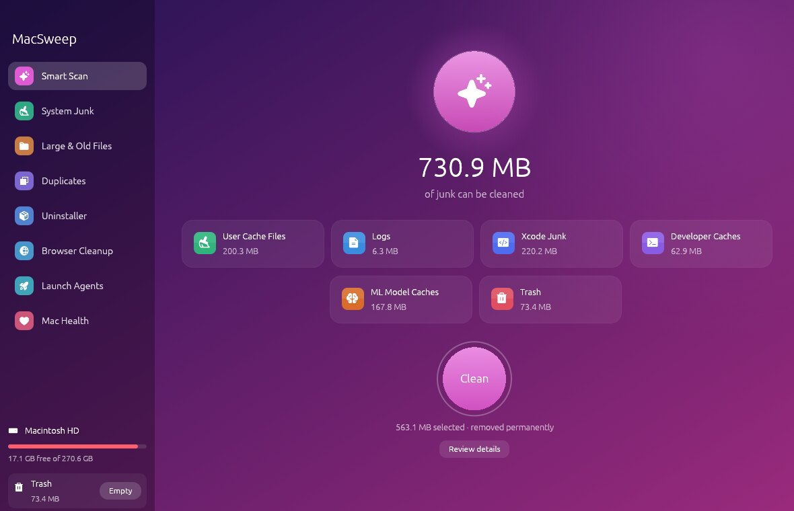
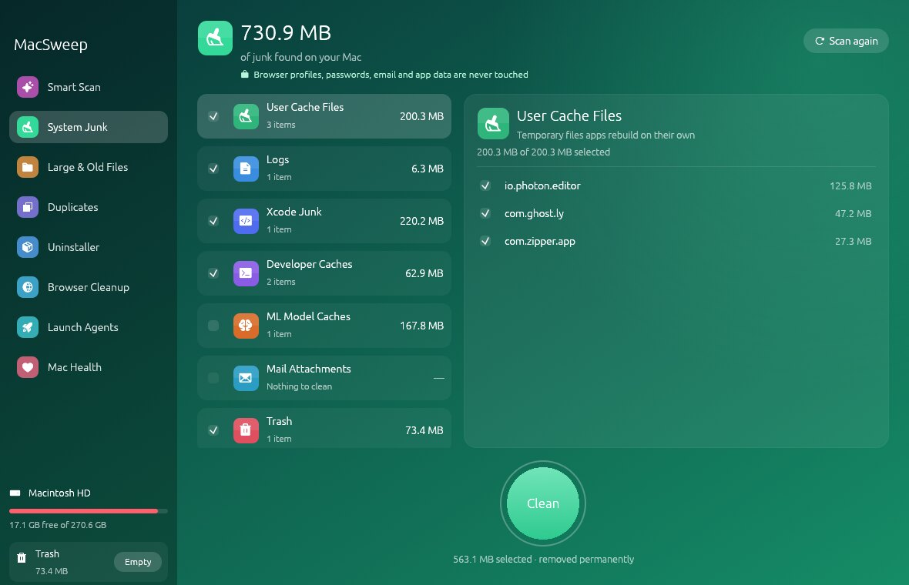
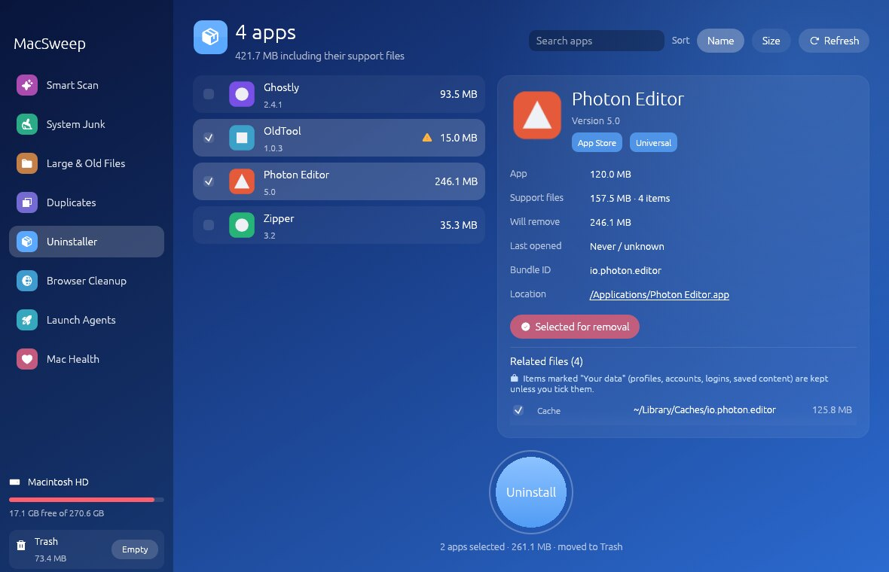
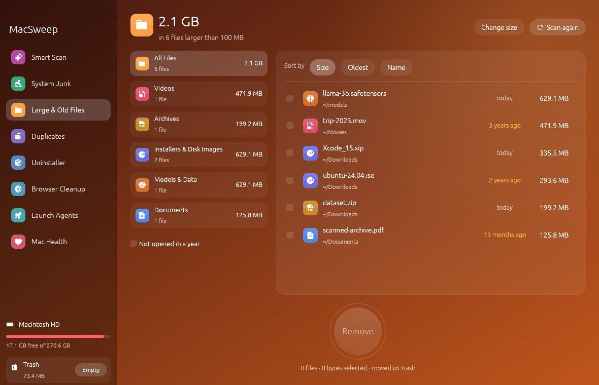
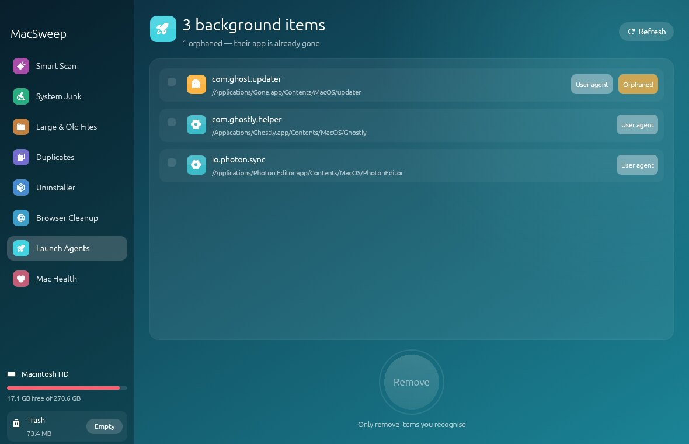

The Mac cleaner that leaves your data alone.
MacSweep is a free, open-source Mac cleaner written in Rust. It clears junk, finds forgotten large files and fully uninstalls apps, and it can never delete your browser profiles, email or app data.
Free and MIT licensed. About 7 MB. Apple Silicon and Intel, macOS 11 or later.

What it cleans, and what it never touches
Some cleaners have wiped people's browser profiles and mailboxes. MacSweep can only delete inside a fixed list of disposable folders, and it checks every path again right before deleting. Automated tests guard the right-hand column.
Cleans
Disposable files that apps rebuild on their own.
- App caches ~/Library/Caches
- Logs and crash reports ~/Library/Logs
- Xcode build data DerivedData
- npm and Gradle caches ~/.npm, ~/.gradle
- ML model downloads, opt-in ~/.cache/huggingface
- Trash ~/.Trash
Never touches
Your accounts, history and saved work.
- Chrome and Brave profiles Application Support
- Firefox and Safari data Profiles, ~/Library/Safari
- Mail and Messages ~/Library/Mail
- Passwords and keychains ~/Library/Keychains
- Cookies and logins ~/Library/Cookies
- Your documents ~/Documents
Everything a Mac cleaner should do
Four tools in one small native app, with nothing running in the background.

System Junk
Review caches, logs and developer leftovers file by file before anything is removed.

Uninstaller
Remove apps with their leftovers. Each app shows its real size, version, chip type and last-opened date.

Large and old files
Find forgotten videos, installers, archives and model checkpoints, grouped by type.

Launch agents
Spot background helpers left behind by apps you already deleted, and remove them.
How MacSweep compares
An honest look at the options people usually ask about.
| Feature | MacSweep | Mole (CLI) | Mole for Mac | CleanMyMac |
|---|---|---|---|---|
| Price | Free | Free | Paid, one-time | Paid |
| Interface | Graphical app | Terminal | Graphical app | Graphical app |
| Open source | Yes, MIT | Yes, GPL-3.0 | No | No |
| Oldest macOS | macOS 11 | See project | macOS 14 | See vendor |
Mole is a far more mature project with many more features. If you're comfortable in Terminal, it's a great choice. MacSweep is for people who want a free graphical app with a strict, tested promise about their data.
Install in a minute
- Download the latest
MacSweep-x.y.z.zipfrom GitHub Releases, unzip it and move MacSweep to Applications. - Open it the first time with right-click, then Open. MacSweep isn't notarized by Apple yet, so macOS asks once. You can also run
xattr -dr com.apple.quarantine /Applications/MacSweep.app. - Turn on Full Disk Access in System Settings, Privacy & Security, then relaunch MacSweep. It needs this to see the Trash and Mail attachments.
Questions
Is MacSweep free?
Yes. MacSweep is completely free and open source under the MIT license. There's no subscription, no paid tier, no ads and no telemetry.
Will it delete my browser profiles or email?
No. Junk cleaning can only delete inside a fixed allowlist of cache, log and build folders, and every path is checked again right before deletion. Browser profiles, Mail, Messages, keychains, cookies, app containers and documents are never touched, and automated tests guard this. Uninstalled apps, large files and launch agents go to the Trash, so you can put them back.
How is it different from Mole?
Mole is an excellent, much more mature open-source cleaner, but its free version runs in Terminal. Its graphical app, Mole for Mac, is a separate paid product for macOS 14 or later. MacSweep is a free, open-source graphical app that runs on macOS 11 or later.
Is it a CleanMyMac alternative?
For the core jobs, yes: cleaning junk, finding large files, uninstalling apps with their leftovers and managing launch agents. CleanMyMac has many more features, such as malware scanning and performance tools.
Which Macs does it support?
It's a universal app for Apple Silicon (M1 and later) and Intel Macs running macOS 11 Big Sur or later.
Is this the same as other apps called MacSweep?
No. Several unrelated projects share the name. This MacSweep is the Rust app by nihal4, published at github.com/nihal4/macsweep and listed in awesome-mac and open-source-mac-os-apps.